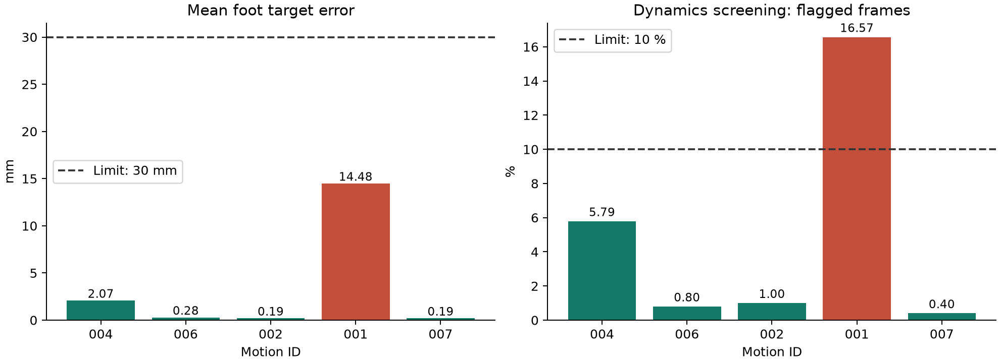
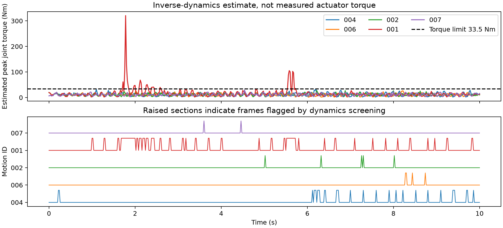

실험일: 2026년 10월 29일 · 대상: 대표 모션 5개 · 로봇 형상: TT e000
모션 001은 발 위치를 맞추는 데에는 성공했으나, 동작에 필요한 힘·토크의 일관성 기준을 만족하지 못했다. 전체 5개가 통과해야 하는 이번 단계의 종합 판정은 미통과(4/5)다. 이는 변환 실행 오류가 아니라, 생성된 동작에 대한 사전 물리 선별 결과다.
CALM A1 로봇에서 얻은 움직임을 몸체 치수가 다른 TT 로봇에 옮겼을 때, 발 궤적을 얼마나 잘 보존하는지와 추종 학습의 목표로 사용하기에 물리적으로 무리가 없는지 확인했다. 리타겟팅은 원래 동작의 발 위치·몸통 움직임을 대상 로봇의 관절 자세로 변환하는 과정이다. 이번에는 정책을 새로 학습하거나 실제 시뮬레이션 추종 성공률을 측정하지 않았다.
각 모션은 평균 발 목표 오차 ≤30mm, 관절 가동 범위 초과 ≤0.01rad(약 0.57°), 역동역학 불일치 상태 비율 ≤10%를 모두 만족해야 한다. 상태 501개, 시간 간격 0.02초 및 유효 수치 조건도 확인한다.
역동역학 불일치는 필요한 몸통 힘을 지지 발의 힘으로 설명하고도 남은 잔차가 체중의 10%를 넘거나, 어느 관절이든 추정 토크가 33.5N·m를 넘는 상태다. 근사적인 선별 기준이며 실제 수행 불가능의 확정 판정은 아니다.
| 모션 | 평균 발 오차(mm) | 관절 범위 초과(rad) | 불일치 비율 | 판정 |
|---|---|---|---|---|
| calm_random_004 | 2.069 | 약 0 | 5.79% | 통과 |
| calm_random_006 | 0.278 | 약 0 | 0.80% | 통과 |
| calm_random_002 | 0.189 | 약 0 | 1.00% | 통과 |
| calm_random_001 | 14.480 | 약 0 | 16.57% | 미통과 |
| calm_random_007 | 0.189 | 약 0 | 0.40% | 통과 |

발 오차는 원본 궤적과의 직접 오차가 아니라, 크기 조정·접지 보정 후 TT의 발 목표에 대한 평균 거리다. 평균값이므로 순간 최대 오차를 나타내지 않는다. 약 0으로 표시한 관절 범위 초과 중 001의 값은 약 8.8×10⁻¹⁸rad로 수치 정밀도 수준이다.
001의 평균 발 오차는 14.48mm로 기준 이내이고 관절 범위도 만족했다. 그러나 불일치가 83/501개 상태(16.57%)에서 발생해 허용 비율 10%를 초과했다. 이 중 토크 한계 초과 상태는 29개이며, 추정 최대 토크는 320.65N·m였다. 나머지 불일치 상태는 몸통 힘 잔차 조건으로 설명되며, 두 조건은 중복될 수 있다.
발 위치를 맞춘 자세가 곧바로 힘·토크 제약까지 만족하는 움직임은 아니라는 결과다. 001에서 변화가 빠른 구간, 접지 전환 또는 보간·차분에 의한 가속도 추정이 얼마나 영향을 줬는지는 아직 분리 확인하지 않았다. 최대 토크만으로 실제 로봇에 같은 토크가 발생한다고 해석하면 안 된다.
| 모션 | 불일치 상태 | 토크 초과 상태 | 추정 최대 토크(N·m) | 몸통 힘 잔차 95백분위* | 접지 미끄러짐(mm/s) |
|---|---|---|---|---|---|
| calm_random_004 | 29/501 | 0/501 | 31.77 | 11.11% | 4.58 |
| calm_random_006 | 4/501 | 0/501 | 26.07 | 1.35% | 1.48 |
| calm_random_002 | 5/501 | 0/501 | 27.19 | 1.28% | 1.10 |
| calm_random_001 | 83/501 | 29/501 | 320.65 | 52.60% | 45.30 |
| calm_random_007 | 2/501 | 0/501 | 29.20 | 1.01% | 1.07 |
*체중 대비 비율. 95백분위는 상태의 95%가 이 값 이하라는 뜻이다. 불일치는 잔차 힘과 토크 중 하나라도 넘으면 집계하므로 두 원인의 수를 단순 합산하면 안 된다. 접지 미끄러짐은 연속해서 발이 지면을 딛는 구간의 평균 수평 속도다.

확인한 성과: 다섯 모션 모두 10초 레퍼런스로 변환됐고, 모두 평균 발 오차와 관절 가동 범위 기준을 만족했다. 002·004·006·007은 이번 역동역학 비율 기준도 만족했다. 004는 불일치 상태가 29개 남아 있으므로 통과를 완전한 물리 일치로 해석하지 않는다.
현재 한계: 통과한 네 모션도 실제 TT의 생존·속도·자세·발 추종 성공을 입증하지 않는다. 바닥 관통, 전체 충돌, 원래 명령의 정확한 수행 여부, 여러 형상으로의 일반화는 이번 판정 범위 밖이다. 이 보고서는 전체 G3 승인 보고서가 아니다.
권장 후속: 001의 불일치 시간 구간을 원본 움직임·접지 전환·가속도와 대조한다. 필요하면 다른 후보 모션으로 교체하거나 변환 방법을 검토한 뒤 같은 기준으로 재평가한다. 이번 5개 전체 통과 규칙을 유지하면 5개 모션 학습 확대는 보류한다. 통과한 004부터 단일 모션 학습을 별도 진행할 경우에는 기존 전체 단계 판정과 구분해 기록해야 한다.
종합 판정 · 모션별 측정값 · 선정 모션과 움직임 특징 · 상세 수치 표
보고서는 저장된 결과와 상태별 역동역학 배열을 읽어 작성했다. 실험을 다시 실행하지 않았으며 기존 결과를 변경하지 않았다. 비교 그래프 수치는 저장된 요약과 대조했다. 결과 폴더에 실행 당시 전체 소스 식별 기록이 없어 완전한 재현성을 확정하지 않는다.